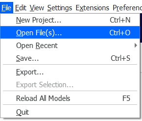

3D Printing
3D printing is an additive manufacturing process where thin layers of melted plastic is layered one after another to create a 3D object.
Click on a link below to jump to a section:
Pythagorean cup
A Pythagorean cup, when filled above a certain level, will drain through a siphon.
Lacedaimonios, CC BY-SA 4.0 <https://creativecommons.org/licenses/by-sa/4.0>, via Wikimedia Commons
First the cross section of the cup is drawn.
The cross sectional profile is revolved around the construction line.
The second tube is sketched.

The cross sectional profile of the second tube is revolved.

The two tubes are connected to make them appear smoother.

The profile is extruded joining the tubes together.
The inlet is chamfered to smoothen the fluid flow.
The top profile is sketched.

The top profile is extruded as a new part to be easily manipulated later.
The rounded profile is sketched.

The rounded profile is revolved with the second part.
The overhang is chamfered at a 45-degree angle to be printed without support material. This is important as it would be near impossible to remove support material inside the tube.
A new plane is created between the two tubes.

The second part is mirrored, using the new plane as a mirror plane. The mirror joins the second and third part to the first part, the cup.
The gap between the two newly created geometries are joined with an extrude.
The tube is filleted to smoothen the fluid flow.
More fillets are added to the model to smoothen edges to make them look better.
A chamfer is added at the outlet to improve fluid flow.
Click to download CAD files:

Tollerance test
A tolerance test can be used to check the tolerance of a 3D printer.

First, some variables are defined so that they can be change easily.

A sketch is created of the main body.

Then, the test rods and sweep profile are sketched. Tolerances are defined with an offset and a multiple of the tolerance step variable.
The body is extruded.
The test rods are then extruded.
The test rods are patterned to create ten test rods.
The sweep profile removes geometry from the body. This is repeated with all slots.

An offset plane is created to split the part so that it is more compact.

The part is split using the new plane as a tool.

The part is moved using transform, translate by xyz.

The two parts are now joined together with boolean, union.
Text is added to identify the test rods.

The text is extruded.
Click to download CAD files:
Bridging test
A bridging test can be used to determine the largest unsupported overhang that can be printed.

A profile is first sketched.
The profile is then extruded with two extrude operations to create separate parts.

The extruded parts are now transformed to create an offset.
A sketch is created, joining the side edges of all the test strips.

An extrude is used to join all the strips.
By using another extrude, an air gap is created.

Another sketch is created at the left side of the object.

The sketch is extruded in two different thickness to create a line to make it easier to read the scale.
The text is added in two different sketches as the extrude distances are different.

The text is also extruded in two different operations.


Click to download CAD files:
Overhang test
An overhang test can be used to determine the largest unsupported overhang angle that can be printed without the use of support structures.
First the sketch for the overhang test profile as well as a cylindrical surface is drawn.
The cylindrical surface is then extruded.
A helix is drawn using the cylindrical surface as a tool.
The test profile is swept. The helix is used as a path.
The neutral geometry is extruded. This geometry supports the test geometry.
The sketch to create splitting surfaces is created.
The splitting surfaces are extruded.
The part is split, using the splitting surfaces as a tool.
Transform is used to move the parts so that there will be an offset between each test angle range.
A sketch is drawn to connect the test geometries together and to create a base.
The base is extruded.

Steps are extruded to make the scale easier to read.
Text is sketched on two layers as there is a step.
Both layers of text is then extruded.
Click to download CAD files:
Infill test
This infil test shows how different infill percentages appear.
The test strip width is a variable so that it can be changed easily.
A sketch is drawn and each strip is extruded.
The base is then extruded.
Another sketch is created for the side.
The side is extruded in two extrude iprations to create a step so that it is easier to see the different infill steps.
Text is added in two sketches.
The text is then extruded in two extrude operations.
Click to download CAD files:
Cura
Cura is a slicer, it turns 3d models into g code which the 3d printer can understand.
First we must add the Ultimaker 2+. Click settings, then printer, Add printers.
Click the dropdown for "Add a non-networked printer", then sellect Ultimaker 2+, then click add.
Now open the stl file that is to be printed with file, Open Files.
The stl files will be imported.
The position of the mesh can be changed by moving it. Select the object, then move and drag the red, green or blue arrows or enter absolute values.
To duplicate models, select the mesh to duplicate, then right click and select multiply selected models.
A dialog will open. Enter the number of copies and click OK.
Move the other meshes into position.
To change the infill density, select mesh, modify settings for overlaps.
To change the infill density, select mesh, modify settings for overlaps. Then click select settings.
A dialog will appear to change the model settings.
Select the settings to change and click close.
Change the dropdown to cutting mesh. and the top layers to zero and the infill density to the desired onfill density.
The model is now prepared.
To generate the g code, click slice.

Once slicing is done, The time and material usage is shown. To view the path, click preview.
The infill, in orange can be seen.